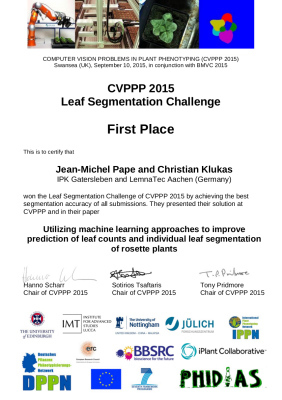

Multi Channel Classification and Clustering System
This project is maintained by OpenImageAnalysisGroup
Both challenges (LSC, LCC) are organized in connection with the Computer Vision Problems in Plant Phenotyping (CVPPP) workshop (official website). Here, the MCCCS is used for the prediction of leaf counts and leaf borders. Details can be found in the following conference paper:
| Jean-Michel Pape and Christian Klukas. Utilizing machine learning approaches to improve the prediction of leaf counts and individual leaf segmentation of rosette plant images. In S. A. Tsaftaris, H. Scharr, and T. Pridmore, editors, Proceedings of the Computer Vision Problems in Plant Phenotyping (CVPPP), pages 3.1-3.12. BMVA Press, September 2015. pdf |
|  |
The approach by using the MCCCS showed the best results in the 2015 Challenge. The results are presented in the CVPPP at the BMVC 2015 in Swansea.
Results for the LCC:
Results for the LSC:
|